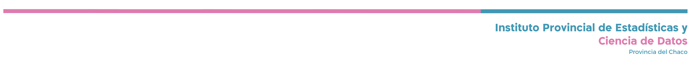

2 Hambre cero

Objetivo 2: Poner fin al hambre
Perspectiva Global
Desde 2014 hasta 2019, el número de personas que padecen hambre y sufren inseguridad alimentaria grave o moderada ya iba en aumento. Ahora bien, en 2020 estos datos experimentaron un fuerte repunte debido a la pandemia de la COVID-19. El aumento persiste en 2021, ya que la interrupción de las cadenas de suministro de alimentos y la desaceleración económica siguieron afectando a los sistemas alimentarios de todo el mundo, limitando el acceso de las personas a los alimentos en muchas partes del mundo. En términos generales, en el bienio de 2020 y 2021, la pandemia puede haber provocado que hasta 210 millones de personas más entren en el grupo de población que padece hambre. (FAO, 2021)
La pandemia de la COVID-19, una situación sin precedentes, supuso un gran desafío para la evaluación del estado de la inseguridad alimentaria en el mundo en 2020 y 2021. Como resultado, la incertidumbre que siempre caracteriza a las estimaciones relativas al número de personas que padecen hambre e inseguridad alimentaria se ha visto amplificada. En todas las regiones del mundo, las cifras del hambre siguen reflejando importantes disparidades:
“África es la región donde la proporción de la población afectada por el hambre es más elevada (20,2 %) y es la que más ha aumentado desde el inicio de la Agenda 2030 para el Desarrollo Sostenible en 2015 (+ 4,4 puntos porcentuales). La proporción de personas que padecen hambre es menor en Asia (9,1 %), América Latina y el Caribe (8,6 %) y Oceanía (5,8 %), mientras que se mantiene por debajo del 2,5 % (es decir, el valor más bajo del que se dispone de información fiable con los métodos de estimación actuales) en América septentrional y Europa. En comparación con 2015, la situación ha empeorado significativamente en todas partes; además de África, también se registró un aumento en Asia (+ 1,1 puntos porcentuales) y, especialmente preocupante, en América Latina y el Caribe (+ 2,8 puntos porcentuales).” (FAO, 2021)
Perspectiva Local
El Gobierno de la Provincia del Chaco y la Organización de las Naciones Unidas para la Alimentación y la Agricultura (FAO por sus siglas en inglés) firmaron un memorándum de entendimiento con el objetivo de mejorar la seguridad alimentaria de la provincia. Dentro de este acuerdo se enmarcan las acciones conjuntas que la FAO y la provincia del Chaco pueden realizar para dar cumplimiento a la Agenda 2030 y los 17 Objetivos de Desarrollo Sostenible (ODS). Por las cuales se espera llevar a cabo una Encuesta de Seguridad Alimentaria en 2023, en conjunto con la FAO. Esta encuesta será una de las primeras experiencias subnacionales por parte de FAO.
